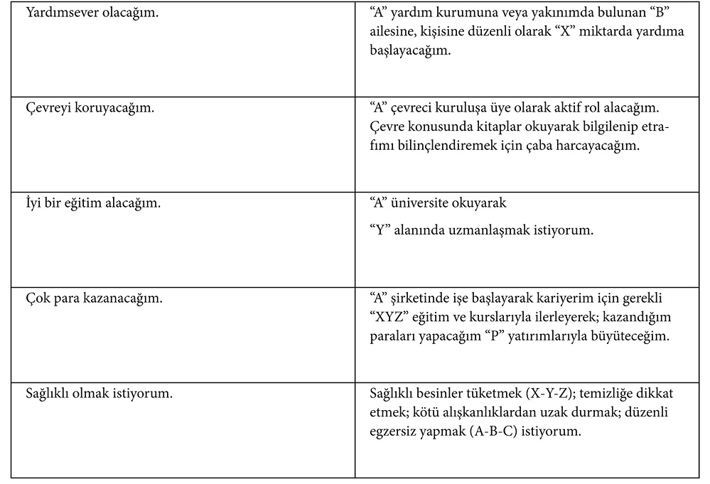
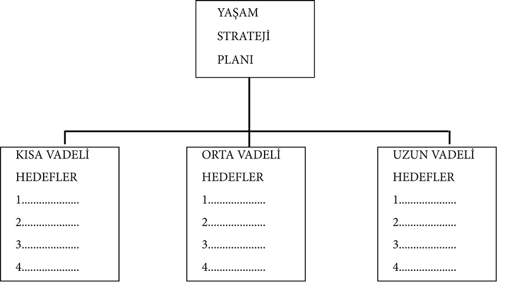
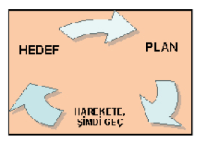

BÖLÜM 8 - HAREKETE ŞİMDİ GEÇMEK!
• Hedefe ulaşmak için hareket şart.
• Hayallerimizi hayata geçirebilmek için projelendirmeliyiz.
• Planlar uygulanmak içindir.
• Harekete, şimdi geçmemenize neden olan mazeretlere sahip olabilirsiniz ama…
• Harekete, şimdi geçmemizi frenleyen en önemli unsur “Başarısız olma” korkusudur.
• Çalışmak, şansın kapısını aralayan en değerli anahtardır.
• Ya olaylar sizi ya da siz olayları yönlendirirsiniz.
HAREKETE ŞİMDİ GEÇMEK!
• Hedefe ulaşmak için hareket şart.
Bir salyangoz yoldan geçerken ona bir kaplumbağa çarptı.
Acil serviste gözünü açan salyangoza neler olduğu sorulduğunda:
“Pek hatırlamıyorum,” dedi. “Her şey o kadar hızlı oldu ki...”
Bir şeyi sadece istemek, onun bizim olmasını sağlamaz. İsteğimizi artırmak, el freni çekili arabada gaza basmaya benzer; iyi bir çıkış için gereklidir. Ancak harekete geçmek için el frenini indirmelisiniz. Eğer koşulları yerine getirmezseniz hareketi tam anlamıyla sağlayamazsınız. Hedefe ulaşmak için hareket şart.
“Kişi içinde hareket ederken dışında hareketsiz duramaz.”
James Allen (1864-1912)
Tüm buluş sahipleri, girişimciler, değişim sağlayan liderler, önemli bir iş yapan herkes akıllarına gelen parlak fikirleri uygulamasalardı ve böylece buluşlarını gerçekleştirmeselerdi; o sadece “parlak bir fikir” olarak kalmaya devam edecekti.
Bir fikrin kendi başına bize pek yararı dokunmaz. Ancak harekete geçip sonuca ulaşılınca, tüm safhaların her biri, işte o zaman ayrı ayrı değer kazanır. Hayaller en değerli hazinelerimizdir. Bu öyle bir hazinedir ki kullanıldıkça daha da değer kazanır.
“Eğer hayal edebildiğin bir şeyse, yapabilirsin.”
Walt Disney (1901-1966)
Suat Günsel, bir köyde ormancı bir ailenin oğlu olarak doğdu. ODTÜ’de fizik eğitiminin ardından kamuda işe başladı. Kısa bir süre sonra bu işten ayrılarak 1978 yılında “Başarı” adında kendi dershanesini kurdu. Bu onun eğitim sektöründe attığı ilk adımdı.
1989 yılında babasından kalan apartmanı ipotek ettirerek Yakın Doğu Üniversitesi’ni (YDÜ) kurdu. Üniversite onun sadece hayallerini gerçekleştirmekle kalmadı, Forbes Dergisi “En Zengin Türkler–2006” listesinde 1.1 milyar dolarla 17. sırada yer almasını sağladı.
Çöplük üzerine dünyanın sayılı üniversitelerinden birini inşa eden Suat Günsel, kuruluştaki zorlukları şöyle anlatıyor: “O araziden 50 kamyon çöp taşıdık. Bir tane bile ağaç yoktu, Ada’nın (KKTC) en çorak tepesiydi, bugün bir orman kurduk.”
Üniversitenin, ayrıca 15 bin metrekarelik kapalı alan üzerine kurulu bir de “Büyük Kütüphane”si var. Hayallerini gerçekleştirmek konusunda iddialı olan Suat Günsel, adı gibi büyük olan kütüphanenin kuruluş öyküsü hakkında ise şöyle diyor:
“Ortaokulda tarih öğretmenimiz İskenderiye Kütüphanesi’nin yakıldığını anlatmıştı. O gün yüreğim ağladı. Üniversite bana bu kütüphaneyi kurma olanağı sağladı.”
(M.S. 391’de İskenderiye’de çıkan ayaklanmanın nedenini dönemin Bizans imparatoru I. Theodosius’un İskenderiye Kütüphanesi olarak görmesi sonucu, kütüphanedeki tüm eserler hamamlarda yakılmıştır.)
Durağanlık bize bir şey sağlamaz… Hareket, her zaman bizi hedefe ulaştırmasa da o yolda çabalamanın haklı gururunu yaşatır.
Temel: “Amma da hızlı örüyorsun!” Fadime: “Hızlı davranmak zorundayım... Yün bitmeden kazağı örmem gerekiyor.”
Düşlerinizi gerçekleştirmek için hiçbir şey yapmadan öylece oturmak, ağır bir sorumluluk altına sokar insanı; yaşamı ıskalamanın sorumluluğuna.
Sahip olmak istediğiniz her neyse, düşlerini kurduğunuz hangi arzunuzsa bunu elde edebilirsiniz. Yeter ki onları elde etmek için küçük bir adım atın ve büyük hayalinize ardı ardına atacağınız diğer adımlarla kavuşun.
Bazen iyi bir plan için elde yeterli veri yoksa da hedefe ulaşmak için harekete hemen geçmek gerekebilir. O zaman hareket devam ederken kendi içinde düzenlemeler yapılır; “Kervan yolda düzelir” atasözü tam da bunu anlatır.
Bugün hayallerinize ulaşmak için ne yaptınız? Eğer bir şey yapmıyorsanız onların kendiliğinden gerçekleşeceğini mi umuyorsunuz?
Bu, yaşamınızı rüzgârda savrulan bir yapraktan farksız kılar. Siz bir yere hareket etmiyorsunuz, yönlendiriliyorsunuzdur. Teknoloji ile açıklanacak olsa insan, son derece ileri özelliklerle donatılmış harika bir yapıt olarak sunulurdu. Bu muhteşem eser, yani siz, daha fazlasını hak ediyorsunuz.
Hayallerinizi başkası gerçekleştirmeyecek, bunu yapacak olan sizlersiniz… O halde kıpırdayın; harekete, şimdi geçin ve gerekeni yapın.
Yaşamı kenardan izlemek oturduğu yerden bir müziğe tempo tutmaya benzer. Oynamak istiyorsunuzdur ancak sahneye çıkmaya cesaretiniz yoktur. Dans etmek istiyorsanız ayağa kalkıp sahneye çıkmalısınız ki, son nefesinizi verirken yüreğinizin derinliklerinde, isteklerinizi yapamamanın burukluğu kalmasın.
“İnsanların çoğu, mezarlarına müziklerini hâlâ içlerinde taşıyarak giderler.”
Oliver Wendell Holmes (1809-1894)
Hayatımızda doğru anlamlandırmamız gereken kavramlardan biri de “beklemek”tir. Beklemek; gereken adımlar atıldıktan sonra bizim dışımızda gelişecek olaylar için geçen zamanı ifade etmeli; hiçbir şey yapmadan hayatın akışını izlemeyi değil. Nasıl ki akarsuya bakarak yönünün değişmesini bekleyemezsek; yaşamı seyrederek içinde bulunduğumuz durumun da daha iyi olmasını sağlayamayız.
• Hayallerimizi hayata geçirebilmek için projelendirmeliyiz.
Hayallerinizi sisli bulutların ardından çıkarın, onları görünür kılın. Önce siz hayallerinizi net olarak görün ki, onların gerçeğe dönüşmesini sağlayabilesiniz.
Sisli Hayaller Görünür Hayaller

Bu hayallerimize netlik kazandırır. Böylece hayallerimiz daha açık seçik bir kimliğe kavuşmuş olur. “Görünür Hayaller” aslında isteklerimizin bir sonraki aşamasını ifade eder. Yani o artık sadece bir istek değildir bizim için; belirlediğimiz hedef için planlamaya geçiştir. Genelde insanlar hayallerini görünür hale getiremezler ve ilk aşamada “sis” içinde takılıp kaybolurlar, yönlerini kaybeder, nereye gideceklerini tam olarak bilemezler. İsteklerinizi sisten kurtarıp görüntü haline getirin, gerçeğe dönüştüğünü göreceksiniz.
Hayallerinizi bir kâğıda yazmanız; onları gerçekleştirmek adına verdiğiniz ilk uğraş, attığınız ilk adım olması yönünden çok önemlidir. Ne yapacağınızı bilirseniz onu yaparsınız, ne yapacağınızı bilemezseniz, yaptığınızı sanırsınız.
Hayallerin tamamı (yargısız-sınırsız) bir kâğıda yazılmalı ve bunlar gözden geçirilerek kısa-orta-uzun vadeli bir “Yaşam Strateji Planı” hazırlanmalı. Ardından her bir hayal için neler yapabileceği tespit edilerek harekete geçilmeli. Bir bulmacanın, yap-bozun parçalarını tek tek birleştirmek gibi… Sonunda; güzel bir yaşam resmi oluşturabilmek için çabalayan bir sanatçı çalışkanlığı, coşkusu ve ne yaptığını bilen bilge adam duruşuyla…

“Yaşam Strateji Planı”ndan öncelikli olanları işaretleyerek ilk olarak bunlardan başlayın işe. Bu liste sizin hayat listenizdir. Atacağınız her “tamamlanmıştır” işareti gerçek anlamda doğum günlerinizdir. Hayatı istediğiniz şekilde yaşadığınızın, kendi şarkınızı yüksek sesle söylediğinizin kanıtı olan çentiklerdir onlar.
Kendini gerçekleştirmiş olmanın, başarıyı yakalamış olmanın haklı gururunun listesidir artık o. Her atılan çentik bir sonraki hayalin temelini oluşturur. Kazanılmış başarı, bir sonrakine enerjisini aktarır çünkü. Artık o hayali gerçekleştirmek için daha fazla güce sahipsinizdir.
“Yaşam Strateji Planı”ndan ilk olarak başlamak istediklerimize, bir gerçekleşme süresi belirlemeliyiz. Mantık kriterleri ışığında bizim belirleyeceğimiz bu süre ve hayalimize ulaşmak için neler yapmamız gerektiğini bir bir sıralayarak gerçekleştirmek onları daha ulaşılabilir kılar.
Tıpkı bir inşaatın başlama ve bitim tarihleri çerçevesinde projenin her bölümünün sırayla hayata geçirilmesi gibi. Yoksa ne olduğu netlik kazanmamış, gerçekleştirilmesi için bir zaman sınırı konulmamış, hayata geçirilmesi için tek plan dahi yapılmamış, ucu bucağı belli olmayan hayalleriniz; yalnızca rüyalarınızda yaşamaya devam eder.
Ancak; sadece rüyalarınızda kalmasına izin verdiğiniz, gerçekleşmesi için hiçbir çaba gösterilmeyen hayaller bir süre sonra sulanmamış, bakımı yapılmamış çiçekler gibi solarlar ve sonsuzlukta kaybolarak sizden uzaklaşıp giderler.
• Planlar uygulanmak içindir.
Uygulanmayan planın yapılmayan plandan farkı yoktur. Planlama sonucunda, yapılması uygun görülmeyerek, bilinçli bir şekilde vazgeçilenlerden söz etmiyoruz. Çünkü bu davranış sonunda, hedefe ulaşmak için yeni bir plan çalışmasına girişilecektir.
Bizim asıl anlatmak istediğimiz; kusursuz yaptığımız planlar için harekete geçme konusundaki yavaşlık ve durağanlıktır.
“Eylem mükemmel bir hitabettir. Söylemenin en iyi biçimi yapmaktır.”
William Shakespeare (1564-1616)
Hedefe ulaşmanın, hayalleri gerçekleştirmenin, başarı kazanmanın en iyi yolu; ona ulaşmak için bir dizi plan yapmak ve bunu vakit geçirmeden uygulamaya koymaktır. Kurallar bu şekilde işler.

Bir binanın projesi çizildikten sonra sıra binayı yapmaya gelir. Temeller kazılır, betonlar dökülür, duvarlar örülür ve nihayetinde çatısıyla bina ortaya çıkar. Proje, binayı yapmak için çizilir; yoksa o projenin tek başına bize bir yararı olmaz. Hayalleriniz de sadece proje safhasında kalmasın…
İleride hayallerimi gerçekleştireceğim demek, şimdi bununla ilgili hiçbir şey yapmayacağım demektir. Bu düşünceyle hayallerimiz hep ileriki bir zamanda, bizim koyduğumuz yerde, durmaya devam edecektir. Ancak ölümsüzlüğün sırrı, en azından henüz keşfedilmedi. Ömrümüzü yani hayat yarışını tamamladığımızda, bu dünyaya bıraktığımız, sadece yerimizde saymakla oluşturduğumuz ve hiçbir anlamı olmayan bir çukur olur.
Hayalleriniz bir tohumdur. Onların gerçeğe dönüşmesini istiyorsanız yerinizden kalkıp bu tohumları ekmeli, onları sulamalı ve büyümesinin her aşamasında ilgilenmelisiniz. Yoksa hayalleriniz, içinde koca bir ağaç saklı tohum gibi kalacaktır sonsuza dek.
“Yıldızların yer değiştirişini görmek mi istiyorsun, onlarla birlikte dönmen gerek.”
Marcus Aurelius (121-180)
Dünyadaki tüm insanlar herhangi bir konu hakkında (siyaset/trafik yaşadığı çevre/açlık /dünya barışı/kendi yaşamını düzeltme/ailesini daha iyi şartlarda yaşatma vs.) bir şeyler yapılması konusunda hemfikirdirler ancak çok az kişi harekete geçer ve işin bir ucundan tutar. Eğer tüm dünya çevre konusunda, dünya açlığı konusunda, yaşamın daha iyileştirilmesi konusunda aynı tutarlılıkla davranıp bir adım atsa ve harekete şimdi geçse bu sorunlar hâlâ devam eder miydi sizce?
“Yapabileceğimiz şeyleri yapmaya başlarsak, kendimizi hayretler içinde bırakacak sonuçlar alırız.”
Thomas Edison (1847-1931)
La Fontaine’nin anlattığı bir masaldır bu.
Masalda anlatılanları şöyle bir okuyunca;
Pekte yabancı gelmez, kendisine ve çevresine
Dikkatle bakanlara.
Kedinin biri, çevreye dehşet saçıyormuş.
Gördüğü hiçbir fareyi, pençesi affetmiyormuş.
Sayıları azalan fareler, bir çözüm bulmak için
Hemen bir araya gelirler.
Büyük bir tartışmadan sonra varırlar ortak bir kanıya.
En büyükleri yerinden kalkar, geleceklerini kurtaracak
O cesaret isteyen formülü açıklar:
“Ne yapıp edelim, bu belalı kedinin boynuna
Bir çıngırak geçirelim.
Böylece geldiğini haber alır,
Deliğimize kaçmak için vakit kalır.”
Tamam bir çözüm bulmuşlardı,
Ancak bu işi kim yapacaktı?
Biraz önce yüksek sesle konuşanlar,
Her konuda mangalda kül bırakmayanlar,
Sıra bunu yapmaya gelince, bir bir kaçtılar gizlice.
Kedinin hükümranlığı hep sürdü…
Sadece çenesi çalışanları, bu hayattan sildi süpürdü.
O gün cesaret edemeyip çıngırağı asamayanlar,
Daha sonra teker teker kuyruklarından yakalandılar.
Toplumun sorunlarına karşı hepimizde var bir reçete,
Ama iş uygulamaya gelince, mutlaka vardır bir bahane.
Ertelemek bir işi yapmamanın en emin yoludur… Uygulanmayan düşünceleriniz ve idealleriniz her zaman bir “TASA”rı şeklinde kalacaktır. Eğer bu ağır bedeli ödemeye hazırsanız, oturarak beklemenin hiçbir sakıncası yok.
Sadece hazır olduğunuz fırsatların size bir faydası dokunur. Öyleyse fırsatları beklemek yerine, onlar için harekete, şimdi geçelim.
Bilgiyi öğrenip sonrasında onu kullanmak için kendine fırsat tanımayan biri, sadece para biriktiren fakat onu harcamayan cimriye benzer.
“Hiç kimse denemeden neler yapabileceğini bilemez.”
George MacDonald (1824-1905)
Harekete, şimdi geçmemenize neden olan mazeretlere sahip olabilirsiniz ama…
Garsonun çok taze diye getirdiği güvercin kızartmasını bir türlü kesemeyen müşteri, yorgunluktan elindeki bıçağı atarken, kuşun ayağına bağlanmış bir tüp gözüne ilişti. Tüpü açtı, içinden çıkan sararmış kâğıttan şöyle bir mesaj aldı:
“Yarın şafakla hücuma kalkacağız. İmza: Napolyon Bonapart.”
Mazeretlerinizle değil, onlara rağmen bir şeyler yaparak hayallerinizi gerçekleştirebilirsiniz.
Mazeretler düşlerimizle aramıza koyduğumuz çoğu zaman da hayata bakış açımızı değiştirerek ortadan kaldırabileceğimiz engellerdir. Çoğu yaşamlar, düşlerine bu engellerin ardından hüzünle bakarak hayata veda etmişlerdir.
“Yeteneklerini gizleme, onlar kullanılmak içindir. Bir şemsiye gölgede ne işe yarar.”
Benjamin Franklin (1706-1790)
Oturup içinde bulunduğunuz duruma yakınabilir, böyle bir yaşamın size sunulduğunu düşünerek dövünebilirsiniz.
Ya da arzu ettiğiniz yaşama kavuşabilmek için harekete geçersiniz.
Sizce hangisi daha onurlu?
Sizce hangisi daha sonuca yönelik?
Siz hangisinde kendinizi daha iyi hissediyorsunuz?
“Ben bunu yapamam, çünkü…” diye başlayıp sıralayacağınız bahaneler veya kendinizde gördüğünüz eksiklikler yerine “ben bunu yaparım, çünkü…”ler üzerine odaklanın. Bunun çok basit bir nedeni var: Amacımız yapmamak değil, yapmaktır.
Hayat böyledir ve beynimiz de bu yönde çalışır. Neye odaklanırsanız onu elde etme yolunda gidersiniz. Bilinçsizce odaklanılan bahaneler yüzünden yapılabilecek işlerin çoğu ya hiç başlanmamış ya da yarım kalmıştır.
Hayatın akışı içerisinde değiştiremeyeceğin olaylar olacaktır. Bunlarla vakit kaybetme. Ama genellikle avcumuzun içindeki değişim gerektiren olaylara da seyirci kalırız. Asıl bunlar için enerjini harca.
Şartlar ne olursa olsun düşlerinizi o şartların ağırlığına gömmeyin, düşlerinizi o şartların üzerinde tutun. Ancak ve ancak düşlerinizi mevcut şartların üzerinde tutmakla, memnuniyetsiz olduğunuz koşulların üzerine çıkabilirsiniz.
Engeller karşısında bazen şöyle hissederiz: “Bu sorunlar da hep beni buluyor.”
Ya da birkaç iyi sonla bitmeyen işimizden dolayı artık yeni bir şey denemekten, dolayısıyla yeni hayaller kurmaktan uzak tutarız kendimizi. Çünkü tüm bunları gelecekte olabileceklerle de genelleyerek, “kendimizi daha fazla kötü hissetmek yerine hiçbir şey yapmamak daha iyi olur” diye düşünürüz.
Sorunlar kişi/adres araştırması yapmaz. Yani o sorunlar, sadece sizin karşınıza çıkmadı. Bugün başarılı olarak gördüklerinizin, hiçbir engelle karşılaşmadan bugünlere geldiğini düşünmek, gerçeklerden uzak bir anlam taşır. Belki daha da fazlasıyla karşılaştılar ama onları durdurmayan, yollarından alıkoymayan sebep; gözlerini, dikkatlerini, heyecanlarını engellere değil hayallerine dikmeleridir. Başarılı kişilerin ortak özelliklerinden biri de hayatlarında ne görmek istiyorlarsa ona yönelmişlerdir. Sorun görmek isteyen onunla karşılaşır.
Çölde petrol arayan şirketin sahibine, şantiye şefinden susuzluktan şikâyet eden mektuplar gelir. Patron sekreterine: “Şikâyet etmek için ne gerekiyorsa yapıyorlar, ama beni inandıramazlar” deyince sekreteri: “Herhalde bu kez iş ciddi” der. “Zira zarfın üzerindeki pulu toplu iğneyle tutturmuşlar...”
Kavramları yeniden tanımlayalım:
ŞİKÂYET = Şİ-mdi KAY-naklarımı ET-kinleştiriyorum. (Bu kavram bize, şikâyet edip sızlanacağımıza tüm kaynaklarımızı etkin bir şekilde kullanmanın tam zamanı olduğunu anlatır.)
• Harekete, şimdi geçmemizi frenleyen en önemli unsur “başarısız olma” korkusudur.
Bu sıkıntı bize başarısızlığın tarifinin yanlış öğretilmesinden kaynaklanıyor. Hedeflerimiz, yapmak istediklerimiz için çaba gösterdikten sonra her zaman arzu ettiğimiz sonuca ulaşamayabiliriz. Fakat bunun adı başarısızlık değildir.
İnanıyorum ki o elde ettiğimiz sonuçtan öğrendiklerimizle göstereceğimiz değişim ve daha farklı yollar deneyerek istediğimizi elde edebilir ya da bir adım daha yaklaşabiliriz hedefe. Ve yeniden, üsteleyerek bir adım daha.
Herhangi bir alanda başarıyı hedefleyen, onu başarmış gibi hareket etmeli. Sonucunda elde edeceği mutluluğu, gururu duyumsamalı. Böylece tüm benliğimizle arzu ettiğimiz her neyse ona doğru yol alırız.
Ama daha yolun başında “ya başarısızlığa uğrarsam mutsuz olurum, gururum incinir” şeklinde düşünür, dikkatimizi buna yöneltirsek vazgeçmemiz kaçınılmaz olur. Başarısız olduğumuzu düşünmek bizi başarıya götürmez. İnsanın iyiye, güzelliğe, mutluluğa yönelme; kötülükten, çirkinlikten, mutsuzluktan ise kaçınma eğilimi vardır; öyleyse bu bizim işimizi daha da kolaylaştırır.
Düş kurmak cesaret ister; çünkü limanda duran geminizi yeni yerler keşfetmek için hazırlamak demektir düş kurmak.
“Eğer bir nitelik kazanmak istiyorsanız, zaten bu niteliğe sahipmişsiniz gibi davranın.”
William James (1842-1910)
“Hiçbir şeye cesaret etmeyen, hiçbir şeye ümit beslemesin.”
Friedrich Schiller (1759-1805)
Yazar ve profesör John Augustus Shedd: “Limandaki gemi güven içindedir fakat gemiler limanlar için yapılmamıştır,” der.
“Açılmamış kanatların büyüklüğü bilinmez,” diyerek potansiyelimizi sergilemeye davet eder yazar Andre Gide. Ve şöyle devam eder teşvikine: “Kıyıyı gözden kaybetmeye cesaret etmedikçe insan, yeni okyanuslar keşfedemez.”
Güvenli limanlarda gemilerimizi çürümeye bırakmamamızı öğütleyen bir başka yazar ise Mark Twain:
“Bundan yirmi yıl sonra yapmadığınız şeylerden dolayı, yaptıklarınızdan daha fazla pişman olacaksınız. Demir alın ve güvenli limanlardan çıkın artık... Rüzgârları arkanıza alın, araştırın, hayal edin ve keşfedin.”
“Cesaret hiç korkmamak değil, korkuya rağmen bir şeyler yapabilmektir.” diye düşünceleriyle destek verir yazar Napolyon Hill bu konuya. Bir eleştirmen Sydney J. Harris ise önceden uyarır; cesur davranmayarak kaybettiğimiz düşlerimizin sonuçlarına katlanmak zorunda kalacağımızla ilgili:
“Yaptığınız şeyler için pişmanlık zamanla geçer, ne var ki yapmadığımız şeylere pişmanlığın çaresi yoktur.”
Yine bir yazar Colin Wilson son noktayı koyar:
“Kelebek bir defa kanatlandı mı, bir daha asla tırtıl haline gelmez.”
Ancak bir şeyden korkmaya başladık mı gerisi gelir. Ve bu korkuyu ne kadar besler ve büyümesine izin verirsek o kadar fazla hayatımızı yangın yerine çevirir.
“Sadece fazla ileri gitme riskini göze alanlar, ne kadar ileri gidebileceğini öğrenir.”
Thomas Stearns Eliot (1888-1965)
Bizim kontrolümüzde olan korku, bizi tehlikelerden korur. Kontrolsüz alevlerin ise ne kadar zarar vereceği hiçbir zaman önceden kestirilemez. Aynı şey cesaret içinde geçerlidir. Herhangi bir şey sizi korkutuyorsa ve siz o yönde cesur bir adım atmışsanız, diğer cesur adımlarınız için de büyük bir kapı açmışsınız demektir. Cesaretin içinizde yayılmasına izin verirseniz korku da kendi sınırlarına çekilecektir. Çünkü ikisi aynı anda aynı topraklarda yeşermez.
Biraz korku ve onun getirdiği tedbir bizi tehlikelerden, acele karar sonrası yapılacak hatalardan korur. Bir Afrika atasözü atacağımız adımlar için şu uyarıda bulunur: “Yalnızca bir deli suyun ne kadar derin olup olmadığını iki ayağıyla anlamaya kalkar.”
Ve dünya edebiyatının en çok okunan eserlerinden biri olan “Don Kişot”un yazarı Miguel de Cervantes (1547–1616): “Akıllı insan, bütün yumurtalarını bir tek sepete koymaz.” diyerek riski dağıtmamızı ister. Korku ve tedbirler gereğinden fazla olursa hayat zorlaşır, hareketsizleşir. Hayatın asıl amacı sürekli tedbir almak değildir, asıl amaç yaşamaktır; belirlenen hedefe doğru yol almaktır. Korkularımızın bizi olduğumuz yere çivilemesine ve tedbirlerimizin bizi yolumuzdan alıkoymasına; hayatı ıskalamaya izin vermeyelim.
Bazı kişiler istedikleri birkaç hayali gerçekleştirdiklerinde dururlar. Bunun sebebi kazandığı bir oyun sonrası yeniden sahaya çıktığında kaybetme endişesidir. O hep son oyunu kazanmış olarak hatırlamak ve hatırlanmak ister.
Hâlbuki müsabaka yaşam boyu devam eder. Onun kazandığıysa o oyunun sadece bir bölümüdür. Bir gol atıp, bir sayı kazanıp durmak, oyunun sonunda büyük bir yenilgi almamıza neden olur.
İşte birkaç hedefimize ulaşıp, geri kalan yaşantımızı bu miras üzerinden sürdürmenin faturası da aynen böyle ağır olur. Başarı, bir basamak çıkıldığında onun mutluluğu yaşanırken diğer basamağa ulaşmanın planları üzerine kurulur.
Bir basamak yükselişin, uzun başarı merdiveninde tek başına değeri küçüktür ama o uzun merdivenin tırmanılmasında gerekli olan aşamalardan biri olduğu için önemlidir. Her küçük yükseliş bütünü tamamladığı için değer kazanır.
Her gün bir önceki günden daha iyi olabilmek için uğraş vermek ne değerli bir çalışma. Ama her gün bir başkasından daha iyi olabilmek için verilen uğraş ne mutsuz edici ve sonuçsuz bir çaba.
Kendi potansiyelimizin farkında olarak, gideceğimiz yönü belirleyerek, ona ulaşabilmek için, ileriye doğru her adım için gösterilen çaba bizi hedefimize götürür. Olabileceğimizin en iyisi olabilme uğraşıdır bu ve bunun sınırlarını da biz belirleriz. Yaptığımız işi, o işi en iyi yapanlarla kıyaslayarak, durumumuzu değerlendirebiliriz. Ama sürekli başkasını geçme arzusu, bizi kendimizden uzaklaştıran mutsuzluk maratonudur.
Başarı o kadar basit olsaydı, belki de o denli değerli olmazdı. Başarı onu elde etmek için gerçek anlamda istekli, ısrarlı kahramanlara kucak açar. Yine de istediğimiz sonuca ulaşamasak da düşlerimiz uğrunda çaba göstermenin onuruyla değerlenir yaşantımız. Peki, bu başarısızlık mıdır? Hiç çaba göstermeyenle, o uğurda bir şeyler yapmak için uğraş verenden hangisi daha yakındır düşlerini gerçekleştirmeye.
Seçiminizi yapın:
Düşlerinizi yakalamak ya da dizüstü oturmak.
Hayat sizin, seçim sizin.
Kavramları yeniden tanımlayalım:
KORKU= KOR gibi KU-şatırım her şeyi. (Bu kavram bize, hangi korkumuz olursa olsun, içimizdeki cesaret korunun onun tamamını kuşatmaya yetecek güçte ve büyüklükte olduğunu anlatır.)
• Çalışmak, şansın kapısını aralayan en değerli anahtardır.
Çalışmak ciddi bir iştir, bir disiplin gerektirir. İyi bir çalışma olmadan hiçbir yetenek hak ettiği sonucu alamamıştır.
Çalışmak süreklilik ister. Ancak o zaman arzu ettiğimize ulaşmada büyük yardımı olur. Süreklilik büyük görülen işleri, uzun görülen yolları bitirir. Her gün atılan bir adım, başlangıçta ulaşılması güç görülen hedeflere bizi yaklaştırır.
Çalışmak bir maraton gibidir, uzun solukludur. Biraz koşup uzunca bir müddet dinlenmekle hiçbir yarışı kazanamaz, arzuladığınız hiçbir düşe ulaşamazsınız. İhtiyacımız olan; terimizin soğumasına izin vermeden iyi bir tempo yakalayarak, sona yaklaştığımızda bunu artırmaktır.
Bu, hiç ara vermeyeceğimiz, kafamız suyun altında hiç durmadan kulaç atacağız anlamına gelmiyor elbette. Zaman zaman nefes almak ve gittiğimiz yönün doğruluğunu test ederek durum kontrolü yapmak da gerekiyor.
“Sunduğum her sonuca yüzlerce kez yinelediğim sınama ve hesaplamalarla ulaştım. Sadece Mars’ın yörüngesini belirlemem beş yılımı aldı.”
Johannes Kepler (1571-1630)
“Yol, handan daha iyidir.”
Miguel de Cervantes (1547-1616)
Çalışmadan ümit etmek, toprağı işlemeyen ve tohum ekmeyen çiftçinin ürün beklemesine benzer; sonuçsuzdur.
İşe başlamadan önce bir çocuk gibi hayal kurun, işe girişirken yaşlı bir bilge gibi plan yapın, işe başladığınızda da genç bir delikanlı gibi çalışın.
Yaş zamanın geçmesi sonucu biriken yıllar mı, yoksa o yıllar içinde yaptıklarımız mıdır? 33 yıllık yaşamına (12 yıl 8 ay tahtta kaldı) olabileceğinden fazla savaşlar, kurdurduğu şehirler ve bir imparatorluk sığdıran Büyük İskender (M.Ö.356-M.Ö.323) için Michel de Montaigne (1533-1592):
“İskender’in yaşını gördüğü işlere göre hesaplarsanız hiçbir insanın ulaşamayacağı bir yaş bulursunuz,” demiştir.
Yaşamlarına yaşlarından fazla şey sığdıranlar tarihin engin denizinde ön plana çıkmışlardır.
• Ya olaylar sizi ya da siz olayları yönlendirirsiniz.
Siz olayları yönlendirmek istiyorsanız bir rotanız olmalı. Bu da belirlediğiniz hayalleriniz, amaçlarınız, hedefleriniz doğrultusunda adım adım ilerlemektir. Yoksa olaylar sizi bilmediğiniz yönlere sürükler, tıpkı dümensiz bir geminin okyanustaki hali gibi, meçhule doğru yol alır insan.
Hâlbuki geminin (hayatınızın) kontrolünü ele alıp dümene geçerseniz, haritanızda gideceğiniz noktayı işaretleyip o hedef (hayaliniz) doğrultusunda gözünüzü pusuladan ayırmadan yelken açarsanız; ne çetin dalgalar ne de uçsuz bucaksız okyanuslar sizi yıldırır, çünkü ne yaptığınızın bilincinde, her geçen an ona yaklaşmaktasınızdır.
“Ben şu anki yaşantımdan daha fazlasını hak ediyorum” diye düşünüyorsanız, hak ettiğinizi almak için yola çıkmanın zamanı geldi. “Bir şeylerin değişmesi gerektiğini” düşünüyor ancak harekete geçmiyor ve değişimi hep bir başkasının yapmasını bekliyorsanız içi dolu bir yaşamın avuçlarınızın içinden akıp gitmesine de izin veriyorsunuz demektir.
Korkuyoruz,
Yeni bir işe kalkışmaktan;
Güvenli limanları terk edip,
Keşifler için yola çıkmaktan.
Korkmuyoruz,
Pinekleyip bomboş oturmaktan;
Bir nokta bile koymadan,
Yaşamı öylece sonlandırmaktan.
Seviyoruz,
Vur patlasın çal oynasın;
Kim ne yaparsa yapsın,
Bana dokunmayan yılan bin yaşasın.
Sevmiyoruz,
Gece gündüz çalışmayı;
Bir hedef belirleyip,
Ömür boyu onun peşinden koşmayı.
“Kül olmayı toz olmaya tercih ederim. Parlak bir alev gibi yanıp kül olmayı çürüyüp toz olmaya tercih ederim. Her zerremle muhteşem bir kızıllıkta parlak görkemli bir göktaşı olmayı, uyuklayan bir gezegen olmaya tercih ederim. İnsanın asıl işi yaşamaktır; var olmak değil.”
Jack London (1876-1916)